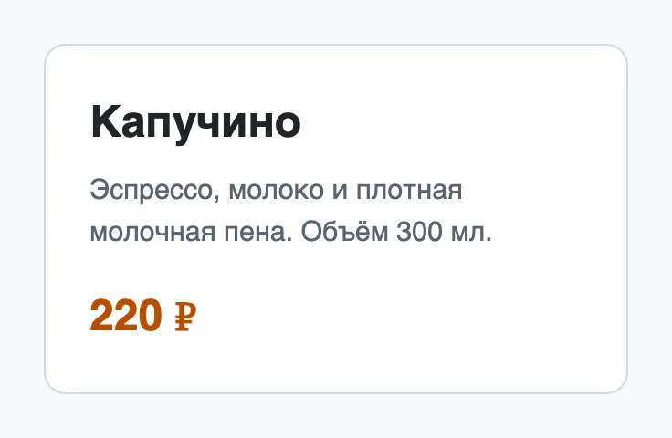

CSS — основы
Селекторы, каскад, box model
После урока вы сможете
- Подключить CSS к странице и написать первые правила
- Выбирать элементы селекторами тегов, классов и состояний
- Предсказывать, какое правило победит в споре
- Управлять размерами через блочную модель и находить стили в DevTools
Урок за минуту
- CSS отвечает за вид: цвета, шрифты, размеры, отступы
- Правило — это селектор и фигурные скобки со свойствами:
h1 { color: brown; } - Стили — в отдельном файле, подключаем тегом
<link rel="stylesheet"> - В споре правил побеждает более специфичный селектор, при равенстве — тот, что ниже
- Каждый элемент — коробка: содержимое, padding, border, margin.
box-sizing: border-boxделает размеры предсказуемыми
Подключить CSS
CSS описывает внешний вид. Стили кладут в отдельный файл и подключают в <head>:
<head>
<meta charset="utf-8">
<title>Кофейня «Зерно»</title>
<link rel="stylesheet" href="css/style.css">
</head>- zerno/
- index.html
<link rel="stylesheet" href="css/style.css"> - css/
- style.cssвсе стили сайта
- index.html
| Способ | Когда |
|---|---|
Файл и <link> |
Всегда. Один файл стилей на весь сайт |
Тег <style> в <head> |
Быстрые опыты, одна страница-пример |
Атрибут style="…" |
Почти никогда: такие стили трудно найти и переопределить |
Анатомия правила
Правило CSS состоит из селектора — к чему применить — и блока объявлений в фигурных скобках.
h1color: brown;font-size: 2rem;h1 {
color: brown;
font-size: 2rem;
}Поменяйте brown на tomato, 18px на 24px. Удалите точку с запятой после brown — сломается следующее объявление. Так выглядит самая частая ошибка в CSS.
Селекторы
Селектор выбирает элементы. Чаще всего вы будете писать классы: атрибут class в HTML и точка в CSS.
| Селектор | Выбирает | Пример |
|---|---|---|
p |
Все теги p | p { line-height: 1.5; } |
.card |
Все элементы с классом card | <div class="card"> |
nav a |
Ссылки внутри nav — через пробел | только меню, не весь сайт |
h1, h2 |
И то и другое — через запятую | общий шрифт заголовков |
a:hover |
Ссылку под курсором мыши | подчёркивание при наведении |
a:focus-visible |
Элемент в фокусе после Tab | рамка для клавиатуры |
#logo |
Элемент с id=«logo» | для стилей лучше класс |
Имена классов — по смыслу, латиницей, через дефис: .card, .card-title, .main-nav. Не по виду: .red-text устареет, как только цвет поменяют.
Цвета
| Запись | Пример | Когда |
|---|---|---|
| Имя | tomato, white |
Опыты |
| HEX | #1f883d |
Чаще всего: так цвета отдаёт дизайнер из Figma |
| RGB | rgb(31 136 61) |
То же, что HEX, другими числами |
| С прозрачностью | rgb(0 0 0 / 50%) |
Полупрозрачные подложки и тени |
body {
color: #1f2328; /* цвет текста */
background-color: #fffaf3; /* цвет фона */
}Помните про контраст из урока 5: серый текст на белом должен оставаться читаемым.
Размеры и единицы
| Единица | Относительно чего | Где использовать |
|---|---|---|
px |
Пиксели экрана | Рамки, тени, мелкие детали |
rem |
Шрифт страницы, обычно 16px | Размер шрифта, отступы |
% |
Размер родителя | Ширина: width: 50% |
vw / vh |
Ширина / высота окна | Первый экран на всю высоту |
rem лучше px для текста: если человек увеличит шрифт в настройках браузера, страница увеличится вместе с ним.
Текст и шрифты
font-family— список шрифтов: браузер берёт первый, который есть на компьютере. В конце всегда общий —sans-serif.line-height: 1.5— межстрочный интервал без единиц, в полтора раза больше шрифта. Для текста — от 1.4 до 1.6.max-width: 60ch— строка не шире 60 символов: такой текст легко читать.
Каскад и специфичность
Бывает, что несколько правил задают одно и то же свойство одному элементу. Какое победит, решает каскад. Главное в нём — специфичность: вес селектора.
p.note#promostyle="…"Если вес равный, побеждает правило, которое стоит ниже в файле.
Текст фиолетовый: у #promo самый большой вес. Удалите правило #promo — станет зелёным. Теперь поменяйте местами .note и p — всё равно зелёный: класс весомее тега, порядок не важен.
!important
color: red !important; перебивает всё. Одно !important тянет за собой следующее, и через месяц стили никто не понимает. Вместо этого сделайте селектор точнее или используйте класс.
Наследование
Часть свойств наследуется: задали цвет и шрифт у body — их получил весь текст внутри. Рамки, отступы и фон не наследуются.
| Наследуются | Не наследуются |
|---|---|
color, font-family, font-size, line-height, text-align |
margin, padding, border, background, width |
Поэтому шрифт и цвет текста задают один раз на body, а не на каждом абзаце.
Блочная модель
Каждый элемент на странице — прямоугольник из четырёх слоёв. Это блочная модель. В DevTools на вкладке Computed вы увидите такую же схему в тех же цветах.
.card {
width: 300px;
padding: 24px; /* внутри: от рамки до текста */
border: 1px solid #d1d9e0; /* толщина, стиль, цвет */
margin: 16px auto; /* снаружи: сверху-снизу 16px, по бокам auto — по центру */
}Сюрприз: ширина такой карточки не 300, а 350 пикселей — браузер прибавляет padding и border к width. Это чинит одна строка, которую пишут в начале каждого проекта:
*,
*::before,
*::after {
box-sizing: border-box; /* width — это вся коробка, включая padding и border */
}Стили в DevTools
DevTools (⌥+⌘+I) — лучший способ понять, почему элемент выглядит так, а не иначе.
- Правый клик по элементу → Просмотреть код. Элемент выделится во вкладке Elements.
- Справа панель Styles — все правила, которые к нему относятся. Сверху — самые важные.
- Зачёркнутое объявление проиграло в каскаде: его перебило правило выше.
- Щёлкните по значению и поменяйте его — страница обновится сразу. Галочка слева отключает объявление.
- Вкладка Computed — итоговые значения и схема блочной модели.
| Что видно в Styles | Что это значит |
|---|---|
element.style { } |
Стили из атрибута style. Сюда же можно дописать свойство для опыта |
.note { … } и справа style.css:12 |
Правило и место в файле. Щелчок по style.css:12 откроет файл на этой строке |
color: red |
Объявление проиграло в каскаде |
| Значок ⚠ у свойства | Ошибка в названии или значении: браузер его не понял |
| Цветной квадратик у цвета | Палитра и пипетка: можно взять цвет с любого места страницы |
Правки в DevTools не сохраняются
Нашли нужное значение в DevTools — перенесите его в style.css. После обновления страницы изменения в DevTools пропадут.
Частые ошибки
Стили не применились
Проверьте по порядку: подключён ли файл (путь в href) и сохранён ли он. Потом — нет ли опечатки в селекторе: точку у класса забывают чаще всего. И закрыты ли все фигурные скобки.
Карточка вылезла за край
Ширина 100% плюс padding больше родителя. Добавьте box-sizing: border-box для всех элементов.
Стили по id
#header { … } весит больше сотни классов — потом его не перебить. Стилизуйте классами.
Шпаргалка
*, *::before, *::after { box-sizing: border-box; }
body {
font-family: -apple-system, "Segoe UI", Roboto, sans-serif;
line-height: 1.5;
color: #1f2328;
}
.card {
max-width: 320px;
padding: 1.5rem;
border: 1px solid #d1d9e0;
border-radius: 12px;
margin: 1rem auto;
background: #fff;
}
.card:hover { border-color: #0969da; }Квиз
- 1. Где правильно подключать стили для сайта?Один файл на сайт легко найти, поменять и переиспользовать на всех страницах.
- 2. Что выберет селектор
nav a?Пробел означает «внутри». Запятая — «и то, и другое». - 3. Как в CSS выбрать элементы с
class="card"?Точка — класс, решётка — id. Без символа — имя тега. - 4.
p { color: red; }стоит ниже, чем.note { color: green; }. Какого цвета<p class="note">?Порядок решает только при равной специфичности. Класс всегда весомее тега. - 5. Какие свойства наследуются от родителя?Текстовые свойства наследуются, поэтому шрифт и цвет задают один раз на body.
- 6.
width: 300px; padding: 24px; border: 1px solid;без box-sizing. Какая получится ширина?300 + 24 × 2 + 1 × 2 = 350. Сbox-sizing: border-boxбыло бы ровно 300. - 7. Для чего лучше единица rem?rem растёт вместе с настройкой шрифта в браузере. Рамки обычно задают в px.
- 8. В DevTools объявление зачёркнуто. Что это значит?Зачёркнутое проиграло в каскаде. Если свойство с ошибкой, DevTools покажет рядом значок предупреждения.
Задания
Стили для рецепта
В homework/06-css-basics/task-1/ лежит страница-рецепт, к ней уже подключён пустой css/style.css. Можете заменить разметку своей из урока 4, оставив подключение стилей и строки проверки.
Перетащите картинку сюда, вставьте из буфера ⌘+V или
- Для всех элементов
box-sizing: border-box - У body шрифт без засечек,
line-heightот 1.4 до 1.6, цвет текста не чисто чёрный - Содержимое не шире 720px и стоит по центру
- Картинка не вылезает за край:
max-width: 100% - Заголовки и ссылки своего цвета
- Плашка проверок: всё пройдено
Карточка по размерам
В task-2 есть разметка карточки кофе. В style.css добейтесь точных размеров:
Перетащите картинку сюда, вставьте из буфера ⌘+V или
- Ширина карточки ровно 320px вместе с рамкой и отступами
- Внутренний отступ 24px, рамка 1px, скругление углов 12px
- Карточка по центру страницы по горизонтали
- Цена крупнее описания и другого цвета
- При наведении мыши рамка меняет цвет
- Плашка проверок: всё пройдено

Спор правил
В task-3/index.html пять абзацев и стили, которые спорят друг с другом. Не открывая страницу, запишите в таблицу ниже, какого цвета будет каждый абзац и почему. Потом откройте страницу и проверьте себя в DevTools.
Затем исправьте стили так, чтобы абзац с классом warning стал красным, не используя !important и id.
- Пять ответов с объяснением через специфичность
- Плашка проверок: всё пройдено
Визитка по картинке
Сверстайте визитку по эталону в task-4/reference.png: имя, должность, контакты, фото-кружок. Точные размеры не важны, важны пропорции, цвета и отступы. Цвета подберите пипеткой в DevTools: щёлкните по квадратику цвета в панели Styles.
Перетащите картинку сюда, вставьте из буфера ⌘+V или
- Визитка похожа на эталон на глаз
- Все размеры в rem, кроме рамок
- Нет
!importantи стилей по id -
npx biome check 06-css-basics/task-4— без ошибок
Ответы из полей выше сохраняются в этом браузере сами — можно закрыть страницу и вернуться. Когда закончите, сформируйте отчёт и отправьте архив ментору.
Ответы хранятся отдельно для каждого способа открыть курс: файлом, через npm start или по ссылке на GitHub Pages. Открывайте курс всегда одинаково.